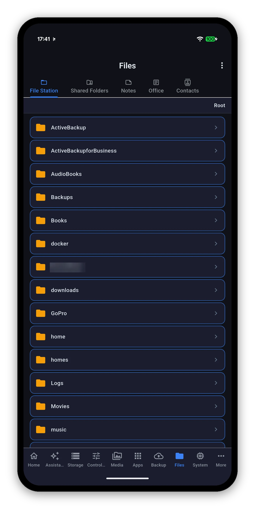
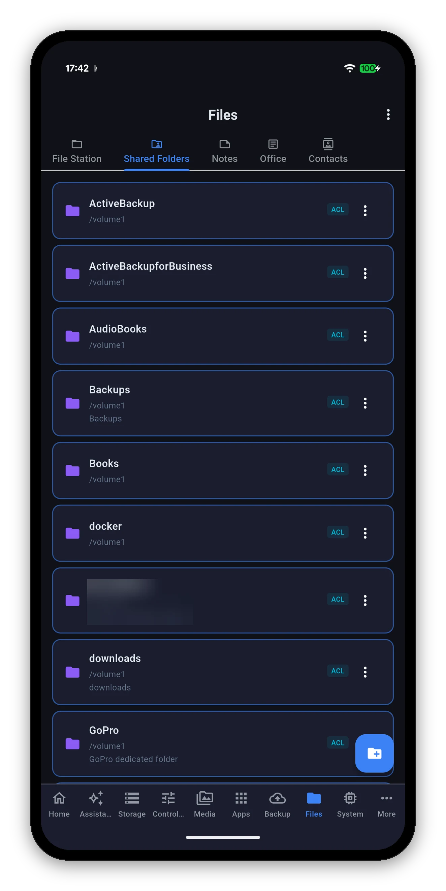
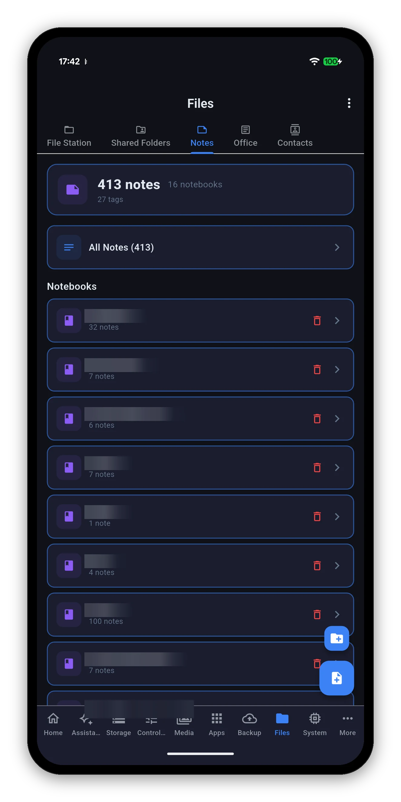
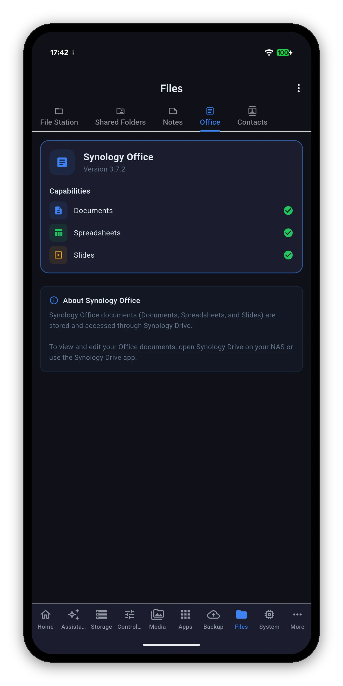
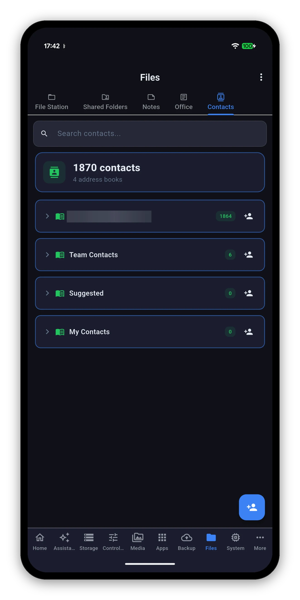

File Station and Shared Folders, plus the three DSM apps that are really about content: Note Station, Synology Office and Contacts. If Download Station is installed it lives here too - it has its own page.

Starts at Root - every shared folder your account can see - and walks down from there. The breadcrumb at the top shows where you are and takes you back up.
Not the files - the shares. Each entry shows its name, the volume it sits on, its description and an ACL chip when it carries access-control permissions.


A summary at the top - total notes, notebooks and tags - then All Notes and each notebook with its own count.
Three notebook titles in this screenshot are blurred - they are a real NAS's.
A status screen rather than an editor: the version of Synology Office your NAS runs, and which document types it supports - Documents, Spreadsheets and Slides - each with a tick.


A total across every address book, then each book with its own count - including books imported from Google, which appear alongside the ones created on the NAS.
One address book name is blurred - it is a real address.
Add by link, magnet or .torrent, and change the settings your NAS reported.